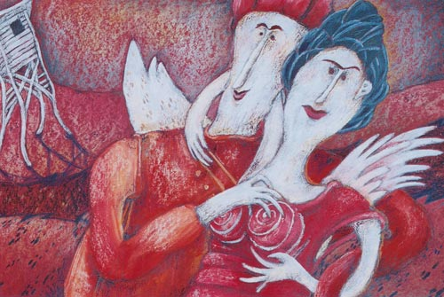

Details
Vernissage: 26. September 1997
Einführende Worte: Dr. Paulus Hochgatterer (Autor und Psychiater)
Die Ausstellung war bis 27. November 1997 zu besichtigen.

Vernissage: 26. September 1997
Einführende Worte: Dr. Paulus Hochgatterer (Autor und Psychiater)
Die Ausstellung war bis 27. November 1997 zu besichtigen.